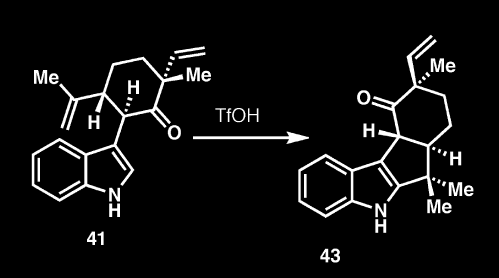

Our reaction is the conversion of
Compound 41
to
Compound 43
through catalysis with TfOH.

The citation for this article is: Fukuyama, T.; Chen, X.
J. Am. Chem. Soc.
,
1994
,
116
, 3125-3126.
The SSG Home is
Here!